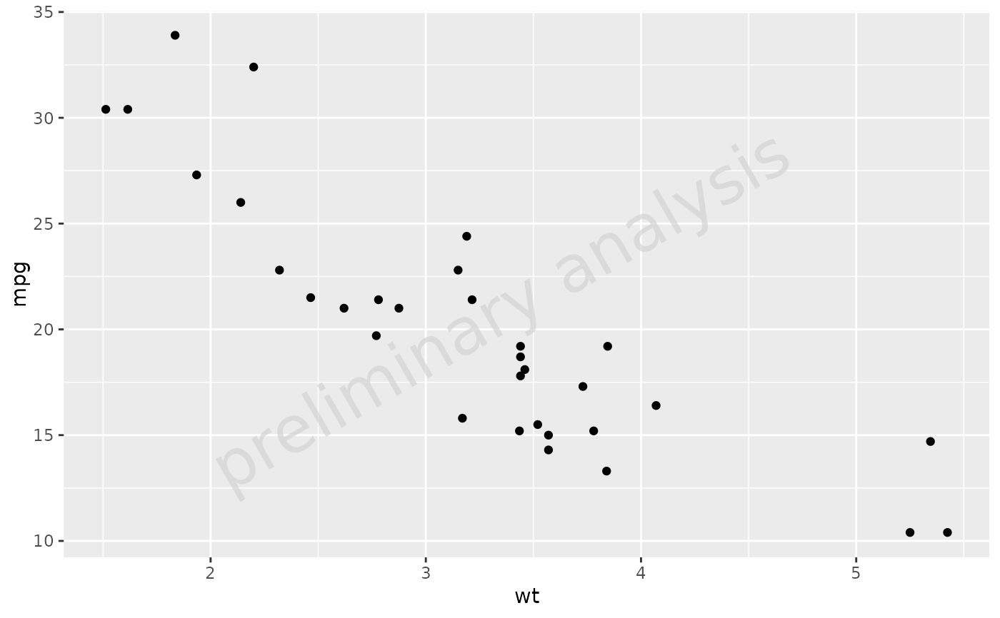
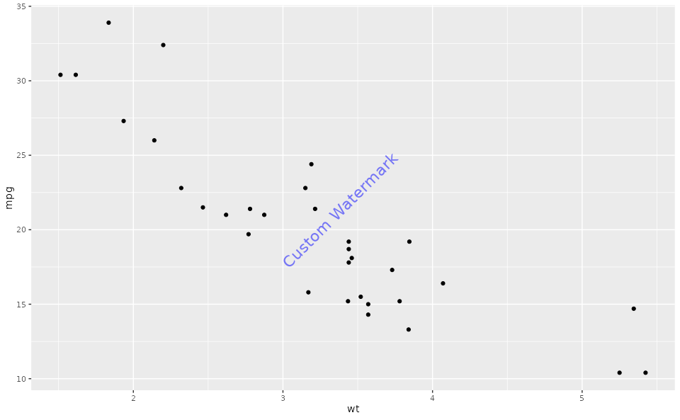

Add a watermark to a ggplot object
addWatermark.RdThis function adds a customizable watermark to a ggplot object. The watermark can be configured with various options such as position, angle, font size, color, and transparency.
Value
A ggplot object with a watermark drawn on it. The watermark is displayed according to the specified options.
See also
Other watermark:
ggplotWithWatermark(),
plot.ggWatermark(),
print.ggWatermark()
Examples
# Example usage
p <- ggplot(mtcars, aes(x = wt, y = mpg)) +
geom_point()
p_with_watermark <- addWatermark(p)
print(p_with_watermark)

# Example of customizing the watermark
setOspsuite.plots.option(optionKey = OptionKeys$watermark_label, value = "Custom Watermark")
watermark_format <- getOspsuite.plots.option(optionKey = OptionKeys$watermark_format)
watermark_format$x <- 0.5 # Centered horizontally
watermark_format$y <- 0.5 # Centered vertically
watermark_format$angle <- 45 # Rotated 45 degrees
watermark_format$fontsize <- 6 # Font size 6
watermark_format$color <- "blue" # Blue color
watermark_format$alpha <- 0.5 # 50% transparency
setOspsuite.plots.option(optionKey = OptionKeys$watermark_format, value = watermark_format)
# Create plot with customized watermark
p_custom <- addWatermark(p)
print(p_custom)
